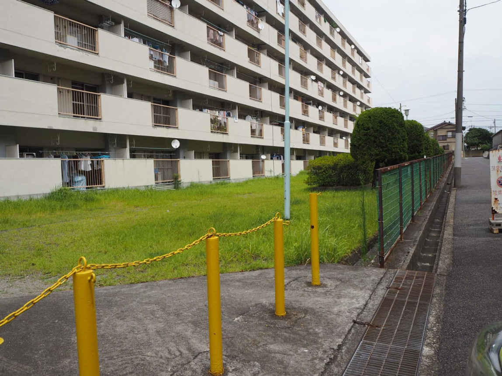
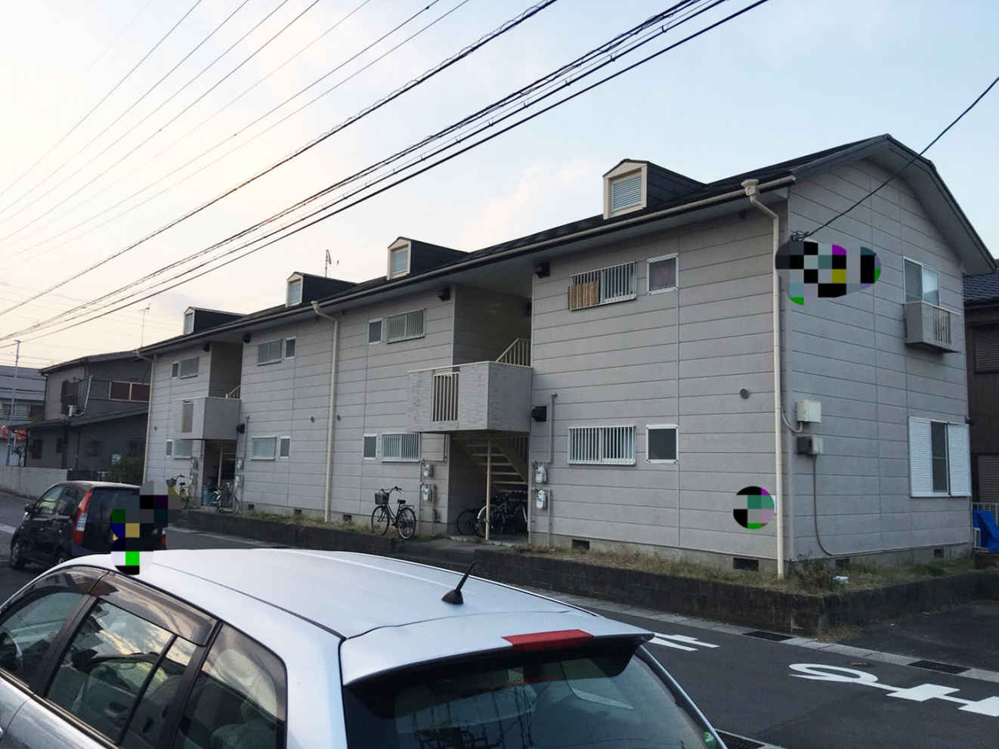

| 月給１３万円の僕が資産１億円を築いた不動産投資 〜シャワーなしボロアパートからの人生逆転術〜 | |
| 川添優博 | |
| Hitotsuku Publication (2017) | |
川添優博
はじめまして、不動産投資コミュニティ講師の川添です。本書を手に取っていただき誠にありがとうございます。
突然ですが、給与明細をきちんと見ていますか？ 消費税や年金の支給年齢引き上げなどの目立つような数字を気にしていても、おそらく天引額の増加を見ていない方は多いのではないでしょうか？
ほとんどの方は、保険料の天引き額を見ていないはずです。政府はそこを狙って、段々保険料を上げようとしているのです。
つまり、給料は上がっていないのに、天引き額は上がってきているのです
。私が月の手取り13
万円の状況から脱却した時よりも、時代は悪い方向に進んできています。このままいくと、２０１９年に、厚労省の発表したシュミレーション通りに保険料が引き上げられた場合、個人の負担額は、実に６４．４５％
になるそうです。汗水垂らして働いても給与の半分以上が国のもの。
この事実を知り、あなたはどう思いますか？ このままでいくと、非常にまずいことになってしまいます。まさに、「働くために生きる」状態になりかねません。この状態になりたくはないから、本書を手に取っていただいたのではないでしょうか？
私は妻子のためにそういう状況から抜け出したい一心で、しっかりと学び、実力と人脈を得て、不動産投資をしてきました。そのおかげで、給与明細の数字とは別の、安定した収入を得ることができました。そして、人生が変わりました。不動産投資は家族の時間を確保しながら、サラリーマン以上の年収を得ることができるのです。
あなたもそういう人生を得たいと願っていますか？ そんなあなたには、ぜひ本書に書いてあるノウハウやマインドセットを、私の逆転劇を知りながら、学んでいただきたいと思っています。
川添優博
投資初心者の方には、不動産投資をオススメします
。そして、私がそう断言する理由としては、学歴もなく特別な能力もない私でも、うまくいくことができるようになったからです。これを聞かれてもまったく不動産投資の良さがわからないと思うので、ここで不動産投資の４つの魅力を挙げていきたいと思います。
①
物件は誰が購入しても同じ
どういうことかというと、不動産の物件は、誰が買っても変わらないということなのです。なので、得られる収入が変わることはないのです。人によって収入に差が出ることはありません。
②
特別なスキルやノウハウは必要ない
株式投資やＦＸは、常に個人の判断に委ねられ、才能が必要となってきますが、不動産投資は物件さえ良ければ、大家が営業しなくとも、勝手に入居者に選ばれます。そのように良い物件は誰が買っても収入は入ってくるので、才能は関係ありません。所有しているだけで収入が発生するのです。
③
大切な時間を割く必要がない
ＦＸや株式投資はレートを見たり、知識やスキル習得にも非常に時間がかかりますが、不動産投資は持っているだけでいいので、時間を割きません。私が不動産投資を始めたきっかけは、不労所得の形成と、なにより家族と過ごす時間を増やすためでした。私は家族のことを一番に大切に思っていますので、所有しているだけで収入が発生する不動産投資が一番良いと感じています。忙しいサラリーマンでもできるのです。
④
ローンを組めるので、今元金がなくても収益物件を購入できる
家賃収入で組んだローンは少しずつ返済されます。ＦＸや株式投資と比べ、ゆっくりと着実に資産が形成されていきます。資産形成のスピードはゆっくりですが、ＦＸや株式投資と比べ、めまぐるしい世界情勢に影響されることはあまりないので、ローンを組んで物件を購入することをオススメします。
この４つを挙げてみましたが、これを読んでみていかがでしたでしょうか？ 不動産投資の良さが少しでも伝わったのではないかと思います。これから、月収13
万円の派遣社員だった私がどうアパートオーナーになれたかを説明していきます。今のみなさんと共通する部分があるはずです。参考になると思いますので、ぜひ読み進めてみてください。
私はいまでこそ、不動産投資コミュニティの講師をやらせていただいていますが、高校卒業後、18
歳で建築の営業として就職したものの、ものの４ヶ月でやめてしまい、派遣会社を転々としていました。
21
歳、リーマンショックで当時勤めていた派遣会社をクビになってしまいました。あまりにも突然にクビを宣告されたので、転職の準備などできるわけがなく、お先が真っ黒になってしまいました。
さらに、解雇前日に、当時結婚を決めていた彼女の妊娠がわかり、喜んでいた翌日に、今月末での解雇を通達され、天国から地獄に突き落とされたような気分が続きました。
私は、家族を養うために、再就職を試みました。しかし、いくら応募しても リーマンショックの影響で人員削減を進めている時期だったので、50
社くらいは受けましたが、まったく就職することはできませんでした。そのため、生活は成り立たず、お腹を大きくした奥さんを臨月まで働かすことになってしまいました。ボロボロの県営住宅にしか住めないほど、収入は無くなってしまったのです。
今では、私はサラリーマンをやりながら、アパートオーナーをやって１億円の資産の持っているのですが、その時は、アパートオーナーになれるとはまったく思えず、唯一の希望は家族の存在だけでした。
当時住んでいたシャワーなし県営住宅
↓

その後就職活動は６ヶ月かかり、なんとか就職できましたが、月の手取りはたったの13
万円。もちろん、それだけでは足りないので、アルバイトなどをしてダブルワークで家族を養っていました。
その後、リーマンショックがある程度落ち着いてきたので、大手自動車メーカーの期間社員になりました。６ヶ月ごとの更新で、最大２年11
ヶ月の契約の月給26
万円でした。リーマンショックが終わり、残業代がきちんと出るような会社でしたので、家族のためになんとか頑張っていくことにしました。
それと並行して、「いつか、家族を幸せにするために、今の状況を挽回したい」と思っていたので、自分の収入を上げるために、様々なことを学んでいきました。その中で、不動産投資の電子書籍を手に取って読んでみました。
その時、初めて不動産投資の魅力に気づくことができました。著者さんについて調べ、直接会いにいくことにしました。その著者さんとお会いした時、「こんな私でも、お金持ちになれる」と本気で思えました。
今まで想像していたお金持ちのイメージとは程遠いものでした。まさに普通の人でした。まったくギラギラしていなかったのです。だから、「こんなギラギラしていない普通の人でもお金持ちになれるんだ！ 私も不動産投資をやってみたい！」と思うようになりました。
その後、成功されている著者を通して良い業者の紹介を受け、不動産投資をするためにはどうすればいいかを相談をしてみました。そこで、物件購入に必要な銀行から融資を受けるためには、正社員の方が有利
だと言われました。
高校卒業から、ずっと派遣会社を転々としていた私にとって、期間社員から正社員になることは厳しい条件でした。ですが、「不動産投資しか人生を逆転させるものはない」と思い、正社員になるためには何をすればいいかを考えるようになりました。
不動産投資のための融資は厳しいですが、１回通ってしまえば、しっかり信用度がつきます。さらにいうと、才能がなくても、良い物件であれば教わるノウハウが実践できます
。だからこそ、才能のない私でもやれると感じたのです。
期間社員になっている間に、もう１人子供が生まれたおかげで、私はなんとしてでも正社員になるという決意をしました。そのために、同じように期間社員たちのように動いてはいけないと感じ、その方々よりも、仕事だけじゃなく、人として会社に必要な人間だと上司に思って貰えるように専念しました。なぜなら、やはり正社員試験がある時に、コミュニケーションをとっている方が、有利だと思ったからです。
当時は、１４００人の期間社員から14
名しか正社員になれないとわかり、２年11
ヶ月という雇用期間の残り日数を記しながら、試験のだいぶ前から既存の正社員よりも仕事ができるようになるために、仕事に身を入れました。さらにインターネットで調べていくうちに、学科も重要だとわかり、試験に備えて学科の試験勉強も始めました。
他の期間社員が参加しない社内のイベントや運動会などに積極的に参加し、上司との交流を図りました。そこで、他の期間社員や参加しない正社員よりもコミュニケーションをしっかりととりました。
その後、正社員登用試験があり、一度落ちてしまいました。それでも私はくじけずに、「もし、ここがダメだったら、他のところで正社員になって勤続年数を増やして、融資を受けよう」とポジティブに考えていました。正社員になれない状態でしがみついていても、不動産投資はできません。そう考えていましたが、再トライしてみて、２回目で試験に合格をしまして、無事正社員になることができました。期間はすでに２年８ヶ月も経っていました。ギリギリでした。もし、落ちていたら、正社員になることはなかったでしょう。
こういう逆境でもポジティブでいられたのは、家族がそばにいてくれたというのが一番大きいのですが、次に大きかったのは、目標を成し遂げた後の自分を想像していたことでした。私は、どうしても不動産投資をしたく、正社員になっていない時でも、よく物件を見に行っていました。そうすることによって、モチベーションを保つことができました。
その後は、正社員として働きながら、不動産投資で稼いでいる成功者のセミナーやコンサルなどに通い続けて、学んでいきました
。そうすることによって、良い人脈を得られたり、何をすればいいかがわかるようになってきました。自分の目標を忘れずに、やるべきことに取り組めました。
融資を受けられる時までの地盤作りを徹底的にしていました。だから、派遣会社を転々としていた私でも銀行の融資を受け、そして、良い物件を手に入れ、資産を１億円まで増やすことができたのです。
これまで私が述べてきた通り、私の月収は13
万円でした。その上、金融の信用度はあまりにも低く、不動産投資がすぐにできませんでした。そんな私が融資を受けられるようになったのは、かなり時間が経ってからでした。
もし、あなたの状態によって、金融機関から融資を受けられないようでしたら、「為せば成る」という言葉を心に刻み込んで頑張ってみてください。年数はかかりますが、私が人生を逆転させたように、人生を変えられるようになると思います。
皆さんにやっていただきたいことは、「とにかく自分でリサーチ」
です。私はとにかくリサーチをし続けてきました。不動産投資に対して肯定的な本も否定的な本もとにかく読みまくりました。「何をしたから成功したのか、何をしていなかったから失敗したのか」がわかってきました。
そこで、私は「物件が命なんだな」と思うようになりました。良い物件であれば素人でも誰でも成功するのがアパート経営であることもわかるようになりました。そこから「どうやって良い物件を見つけることができるようになるのか」を考えるようになりました。
実際にもっと調べてみると、普通は素人には良い物件は出回ってこない
ことがわかりました。そうなってくると、成功している大家さんの物件の担当者に話を聞くのがいいと考えるようになったので、セミナーに通って、人脈を築き続けました。すると、大家さんに良い業者を紹介してもらえるようになりました。
私の場合、融資が受けられる状況ではなかったこともあり、いきなり良い物件を紹介してもらえなかったのですが、時々自分から業者に電話をし、自分の近況を知ってもらう
ようにしました。２年くらいかかりましたが、買う意志を見せ続けたことにより、業者から信用を得ることができました。
その後、都内で区分所有のマンションを購入しました。これは、金融機関での実績を作るためのものです。実績があると金融機関に信用されるようになるので、黒字の運用実績を作ると、次から融資をより受けやすくなります
。 区分所有マンション購入の９ヶ月後、ついに私は、一棟モノを買うことができました。そこから私の逆転は始まり、今ではアラサーなのにもかかわらず、総額１億円の不動産資産を持つまでになれました。
購入した区分所有マンション
↓
購入した一棟アパート
↓

信じられるでしょうか？ これは現実に起きた話です。私以外にも逆転劇を起こしたきた方はたくさんいらっしゃいますが、そのきっかけは不動産投資です。だから、私は投資初心者のみなさんにも不動産投資を勧めているのです。次章以降からは、私が持っているノウハウをみなさんにお教えしていきます。学べば、不動産投資がどれだけ良いものかがわかるようになるはずです。
多くの方は不動産投資にネガティブなイメージをお持ちです。だいたいの不動産投資は失敗してしまうというイメージではないでしょうか。しかし、これは誤り。不動産投資は実に失敗しにくい投資です。次の４つの特徴があります。
・他の株式投資やＦＸなどと比べ価値変動がゆっくりで、対策が取りやすい
投資が失敗するのは、価値が急騰したり暴落したりする時なのです。急激な変化に対応しきれず、失敗してしまうのです。株式投資やＦＸなどのレートは急激に変わってしまいますが、不動産投資はそんなことはありません。価格の変化は月単位です。なので、月単位で対策を考えることもできますし、成功者からみっちり教わることもできるので、失敗がしにくいでしょう。
・資産価値がゼロになってしまうことはない
株は、会社が倒産すると価値はゼロになってしまいます。大失敗ですよね。不動産投資で、価値がゼロになってしまうことは少なく、大きな地震や戦争がない限り、不動産の物件の価値は、ゼロになることはありません。
・融資の返済が終わったら、自分の総資産になる
通常投資は、購入したものを売却して初めてお金になります。株券を引き出しの奥にしまったままだと、ただの紙ですよね。売ってはじめて、利益が確定してもらえるようになるのです。不動産投資には、他の投資とは違うところがあります。融資の返済です。収益を上げている物件で、残債がなければその物件維持にはあまりお金はいりません。家賃収入のほとんどが利益になります。それに、融資返済が終わった物件を担保にさらなる融資を受けることもできます。
・生活に直結した実業なのに、ライバルが少ない
誰に取っても住居は生きるために必要なものです。日本の人口は減ってきていますが、場所によっては人口が増加している地域もあります。最近の傾向としては、持ち家の数もどんどん減ってきていますので、賃貸マンションの需要は増えてきているのにもかかわらず、マイナスイメージのせいかライバルが少ないのです。実は、ノリに乗っている業界と言っていいでしょう。
以上のことから、不動産投資は失敗しにくいため、始めるべき投資
だと思います。また、先行したマイナスイメージがあるため、始めている方が少ないのもウリです。
ここで皆さんに忘れて欲しくないことがあります。それは、いくら不動産投資でも「人脈が大事である」ことです。良い不動産業者とつながることが大事になってくるからです。これから副業でアパート経営をされる方なら、なおさらです。一棟モノのアパート経営をちゃんと成功させたければ、良い不動産業者に嫌われないようにすることが必須
です。
では、どのようにすればよいかというと、次の５つを心がけていけばよいです。
・業者を信用する
紹介された業者に対して、素直に自己開示をしていかないと、相手側が不信感を抱きます。向こうだって仕事でやっていますよね。こっちが相手を信用して自己開示しないようでは、向こうも本当に動こうとはしません。なので、きちんと業者を信用し、自己開示をするようにしましょう。
・本当に良い業者に絞る
これも１つ目にもつながることなのですが、いろんな業者を回っているようでは、業者には「この人と付き合っていても、買う気があるかわからないし、他の客に力を入れよう」と感じるようになります。すると、業者の本気度が下がり、良い物件が回ってこなくなってしまいますよね。なので、紹介されたしっかりした業者だけを信用してそこだけに頼むことによって、向こうも本気になっていきます。そうなると、良い物件を回してくれるようになります。
・良い態度をとる
業者にとって、こちらはあくまで１人の客です。よっぽどの資産家でない限り、こちらは向こうにとっては代わりにいくらでもいるようなものです。なので、「俺は客だぞ」というような横暴な態度は取らず、良い態度を取るようにしていきましょう。「良い物件を回してください」というふうにお願いするような形がいいです。
・自己資金を準備する努力をする
自己資金がないと絶対にダメではないのですが、やはり自己資金があれば、きちんと本気で対応してくれる業者はいます。自己資金がゼロだと、本気度が伝わらず、誰にも相手にされません。ですが、なんとかして集めれば、相手に本気度が伝わり、相手も本気で取り組んでくれるようになります。そうなると、自己資金が少なくとも、なんとかなることもあります！
・きちんとビジョンを持とう！
ビジョンがないと嫌われます。「なんでもいいですよ」と言う人ほど業者からしたら厄介なのです。業者が提示したものに対し、断ってしまうことになると、向こうは何が問題かどうかを聞いてきます。そうした時に、ビジョンがないと、はっきりとした理由も言えません。そうなると、業者が困ってしまい、嫌われてしまう可能性があります。なので、具体的な理由を提示していくことを心がけましょう。そうすれば、不動産業者はやりやすいと思います。
不動産投資も人付き合いでできています。物件所有者と投資家を繋ぐ、不動産業者は非常に重要な存在です。人ですので、やはり嫌われないようにしないことには、良い物件は回ってきづらいのです。なので、掲げた５つをきちんと実行していくようにしましょう。
どのビジネスにも言えることですが、うまくいかない人の特徴とは努力せずにすぐに諦めてしまうことです。投資やビジネスにおいて、今すぐに始められない方もいます。
特に不動産投資は購入金額が多額なため、多少の期間がかかります
。私が不動産投資に出会ったのは24
歳の時ですが、金融機関から融資がおりて１棟目が買えたのは30
歳の時です。実に６年かかっています。ですが、私は６年間、諦めたことがありません。
29
歳になった時に、銀行との取引実績を作るために、区分を買いました。不動産投資の賃貸経営事業を実績として残すことで、金融機関から借入融資がおりやすくなります。
24
歳に不動産投資を知った時に知り合った成功している先輩大家さんに紹介してもらった管理会社さんに、「良い物件が出たら教えてください」と、お願いをしてきました。その時、ちょうど正社員になったばかりだった時からでも、業者さんの信頼を勝ち取る為に本 気度を示してきた結果でした。
昔、シャワーも付いていないボロボロの県営住宅に住むしかなかったくらい何もできなかった私が借りられたのは、やはり、不動産投資をやりたいという気持ちを持ち続けたから
なのです。私はもともと、プロの格闘家を目指していたので、正社員を辞めてそっちの道に進みたいとも思いましたが、銀行からの信用が高い正社員を辞めてしまうと、不動産投資はやりにくくなります。やはり、不動産投資の為には時に我慢が必要です。
ですので、不動産投資はすぐに稼ぎたい人やすぐに脱サラしたい人には合いません
。中長期に見ていける人が不動産投資に合うと言えますので、不動産投資では、まず信用づくりのための我慢が必要です。その間に、良い人脈を形成することもできますし、成功している先輩方に教えてもらうこともできます
。そうすれば、将来不動産投資で自分も成功していくことは簡単なのです。
ここでは１棟買う前の方がどのように２棟目、３棟目と購入していけるかを解説していきます。まず、不動産投資は１棟目が大事なのですが、１棟目でしくじってしまうと、その先挽回するのは非常に難しいのです。
例えば、１棟目で毎月マイナス10
万円を抱えてしまうと、ここからプラスに転じさせるのは難しいことですよね。１棟目が購入できても、２棟目以降の購入が難しい場合があります。
仮にＡ金融機関とＢ金融機関があるとしましょう。１棟目の時に、Ａ金融機関は本業の収入を見ます。Ａ金融機関に、少しくらい物件の立地が悪かったり、返済に苦しみそうだなと思っていても、本業の収入で補填できると思われれば、10
年〜15
年ぐらいの融資がおりることがあります。この時に、無理して融資を受けてしまうと、賃貸経営の赤字を給与で補填している形になります。ただし、Ａ金融機関はこれ以上融資をしないつもりで融資をしてきます。
２棟目を購入する時に、別の金融機関であるＢ金融機関に頼みます。そうなると、Ｂ金融機関は、自分の１棟目で得ている収入を見て、融資を決めるかを判断します。ここで１棟目での収支があまり良くないと、融資がおりません。この調子で、Ｃ金融機関、Ｄ金融機関と続けて審査を受けても、融資がおりるのは難しいでしょう。ですから、特に１棟目物件単体でキャッシュフローがきちんと回っていることが非常に大事になってきます。
では、どうすればいいかというと、１つの方法としては借入期間を長くすればいい
のです。借入期間が長ければ長いほど、１回の返済が少なくなるので、収支がプラスになりやすいのです。途中で借入期間は長くできないので、最初に長くしてもらうような交渉をすべき
です。そうすれば、月々の返済が減り、１棟目の収支がプラスになって、２棟目、３棟目、４棟目と持つことができます。ゆくゆくは４棟を持ち、脱サラすることも可能になってくるでしょう。
不動産投資において、絶対に意味を把握しておくべき言葉があります。それは、「金利」
と「利回り」
です。
「金利」とは、お金を借り入れした時に発生する利息
のことです。不動産投資では、物件が高額なので、銀行から融資を受ける必要がありますので、必ず知っておくべきことなのです。基本的には１年間で発生する利息
のことを指します。
例えば、金利１％
の１，０００万円で融資を受けると、１年間で返さなければいけない利息の額は、10
万円となります。５，０００万円の物件のために融資を受けるとなると、金利が０．５％
の場合は、１年間で返さなければいけない利息の額は、25
万円となります。金利はその時々の経済情勢で変動しますので、常にチェックする必要があります。金利は、低ければ低いほど良いので、必ず頭に入れておきましょう。
「利回り」とは、支出に対する利益の割合
のことです。不動産投資で賃貸経営をする前に、その建物の収益性を考える必要があります。購入する際に、支出金額がどれくらいの期間で回収できるか、また、どのくらいの利益を上げていくことができるかを調べることが大事なのです。利回りが高ければ、収益性が高く、低ければ、収益性が 低いということです。もちろん、利回りが高ければ良い物 件という訳ではありません。この利回りは、満室を想定した収入で、なおかつ修繕の支出を計算に入れていない場合が多いからです。大きな修繕の有無や家賃相場が合っているか、空室リスクはどうか、などのリスクを精査する必要があります。利回りを含めた総合的な精査で、大半のリスクヘッジは出来るでしょう。
賃貸経営における利回りの計算式は、「利回り＝年間の家賃収入÷
購入金額」
となります。例えば、５，０００万円の物件を７％
という利回りで買うとしたら、年間の家賃収入は、「５，０００万円×０．０７＝３５０万円」となります。もちろん、この金額はあくまで満室の場合なので、空室が出てしまうリスクはあります。空室が出てしまうと、家賃収入が３５０万円より下回ることになりますので、注意が必要です。
以上のことから、「金利」と「利回り」は非常に重要な指標なります。「利回り」が高い物件を低い「金利」で、さらに「長期」で組む事が成功の法則な のです。
人によれば、数年に１棟ペースで所有をする方もいれば、会社員ながらも不動産収入だけで年収１，０００万円を突破している方もいます。世の中そんなに甘くはないですし、多額の借金への恐怖を抱いている方も多いと思います。ですが、一棟マンションはそれでもオススメなのです。
サラリーマンのマンション経営者は増えています、なぜかというと、一棟モノを持つことの魅力はたくさんあるからなのです。一番のメリットは、働かなくても収入が入るところですが、他にもたくさんの魅力はあります。何個か挙げていきます。
・病気や怪我で失業して働けなくなっても一定の収入が得られる
・他の金融商品と比べて、ローリスクかつミドルリターンである
・将来、相続税対策や節税対策といった一面がある
・融資を利用することによって、年収の10
倍〜30
倍の不動産を購入することもできる
今の時代、雇用問題や預貯金の金利の低迷が起きています。さらに、自分の身は自分で守る考え方が一般的になってきています
。そういった時代には、一棟モノの経営はやるべき投資の１つなのです。もちろん、空室、家賃滞納、金利の高騰などのリスクはありますが、それらは事前の調査や保証、保険などで抑えることができます。そのために、良い業者と出会うための良い人脈を得られるように、活動をしていくことが肝
なのです。良い人脈があれば、始めやすいのも一棟モノの魅力だと思います。
「サブリース」とは、転貸借のこと
を指します。物件所有者が不動産会社などに建物を一括で借り上げてもらい、その会社から一定の賃料をもらいます。毎月手数料を払う事により、ある一定の割合で決められた賃料を空室に関係なく支払われる家賃保証があります
。これが「サブリース」の最大の魅力になっています。
物件所有者は、不動産会社に入居者関連の管理をすべて任せることができます。その代わりなのですが、物件所有者はその不動産会社にサブリース手数料を払う事になりますので、毎月保証される家賃は、満室時から手数料を引いた分になります。つまり、サブリースとは、不動産会社に自分の物件の入退去を全て任せる事で、空室リスクや滞納リスクなどを考えなくて良くなり、自分は安定を得る運用法となっているわけです。
サブリースを活用するメリットは、家賃収入が安定してくる以外にもいくつかありますので、それらもまとめてここで、サブリースの魅力を挙げておきます。
・空室リスクから解放される
先ほど申し上げたように、不動産会社が自分の物件を借り上げてくれるので、物件に空室が出ていても、オーナーには家賃収入が入ってきます。逆に、サブリースではないと、空室が出てしまうと、当然ながら、家賃収入が減り、次の入居募集の広告費などがかさみ、キャッシュフローがマイナスになる可能性があります。 そういう不安から解消されるのが、サブリースの魅力でもあります。
・家賃回収ができる
空室がなくても家賃が入ってきます。物件に空室があっても、空室の家賃も払われるということなのですが、仮に入居者が家賃を払えなくなっても、自分のところには、家賃収入が入ってきます。入居者が払ってくれない状況になると、保証会社の保証期間しか家賃は保証されませんが、不動産会社とサブリー スの契約がある場合だと、事情が異なります。入退去管理 を全て任せれるので、サブリース業者が対応する事になり、自分は時間を取られずに家賃を回収できるので、 オーナーは入居者からの家賃が入ってこないという心配をしなくても大丈夫なのです。
・サブリースは面倒さがない
サブリースの魅力は他にもあります。入居者との契約や何か問題があった時の対処などは、サブリース形態をとっていれば、すべて不動産業者がやってくれます。入居者とのトラブルや入居者を探すという面倒さがなくなるので、非常に楽になります。
このように、サブリースにはさまざまな魅力があり、やらない手はないくらいです。それに、かなりのプロでないと、サブリースを介さず、自分の物件の空室を埋めることは非常に時間を取られます。なので、物件によっては積極的にサブリースの形態にしていくことが、安定する不動産経営の仕方
なのです。
不動産投資では今の状況によって取るべき戦略が変わります
。これはどの投資にも言えることです。なので、まずは、今の状況に合う物件の選び方をここでは勉強していきましょう。
投資の戦略は高収入と低収入とで大きく変わるので、「高収入向けの物件」と「低収入向けの物件」に向けて分けていきたいと思います。年収６００万円以上の方を高収入とし、年収６００万円以下の方は低収入とします
。
①
高収入向けの物件は、都心で新築
高収入の方は高額の融資を受けやすくなるので、ぜひ、都心で新築の物件をオススメします。なぜなら、都心では現在でも人口が増え続けていて、入居者が入りやすく、空室リスクが少ないからです。それに、家賃も落ちにくい上、10
年後も20
年後も活用しやすく、長く使っていくことが可能
です。ただし、人気な物件が多いため、非常に高額になってきますし、競合が多く、誰でも購入できるわけではないので、ハードルは高くなります。
②
低収入向けの物件は、地方で中古
低収入の方は高額な融資を受けづらくなるので、地方で中古の物件を買うことをオススメします。「自分の物件を現金化したい」と思っている地方の地主さんもいますので、都心と比べて購入しやすいです。また、都心の物件よりも安く購入することができるので、都心より価格のリスクが少ない
のです。もちろん、人口流失がある地方では物件の空室リスクが高く、家賃の値下げのリスクもあります。しかしながら、競合が少ないのが現状ですし、きちんとやれば空室はなくなっていきます
。そのやり方は、私が講師を勤めている不動産投資コミュニティでも教えています。
このように、自分のステータスによって、物件の選び方は変わっていきます。もちろん、細かい部分がたくさんあり、不動産投資のプロに相談しないとわからない部分もあります。私のＬＩＮＥ＠
でも不動産投資に関する役に立つ情報を発信したり、個別の相談にも乗っています
ので、よかったらそちらにご連絡ください。
初心者の方は、自分の物件は自分の住んでいる場所の近くにあった方がいいと思ってしまいがちです。その方が、時々見に行きやすいので、安心できると考えてしまいます。
ですが、実際に、物件のオーナーがたとえ、物件の近くに住んでいても、できることはありません。物件を管理するのは管理会社なので、その会社に任せてしまえばいいのです
。実際、成功しているオーナーさんで、数年に１回しか物件を見に行かない方もいらっしゃいます。
管理会社が全てやってくれます。住民とのやりとりや修繕業者の手配、空室を埋めるための入居者募集など、不動産経営には欠かせないことをやってくれますので、信頼できる管理会社に任せてしまいましょう。そうすれば、自分がどこに住んで、どこに物件があっても、きちんと家賃収入を得ることができる
ので、安心できるでしょう。
リスクのことを考えると、ネガティブ思考に陥ってしまいがちです。それでも、不動産投資を始めたいという方はたくさんいらっしゃると思います。私もそうでした。「失敗したらどうしよう」という思考に陥ってしまいます。ですが、不動産投資で大事なのでは、ポジティブな思考
です。
なぜかというと、「どうリスクを乗り越えていくか」というリスクヘッジの考え方を持つためには、目標達成のための解決策まで考える必要があるのです。ネガティブな思考だと、先がないと思ってしまい、解決策すら考えなくなるのです。
ネガティブ思考だと、「どうすれば状況を打開できるか」などと考えることはないでしょう。ですが、ポジティブ思考だと、前向きに未来のことを考えるようになり、どうリスクを乗り越えるかを考えるようになります。
そうやって、リスクのことを考えるようになり、トラブルが起きた時にどう対処するかを考えるようになるので、リスクはより少なくなるのです。順調な時ほど、リスクヘッジは大事になってきますので、投資をやる際には、必ずポジティブ思考を持つようにすることが大事です。そのためには、できる理由だけを考えるようにしていくことが必要
です。
他の投資にはない不動産投資独自の強みがあります。不動産投資では元手の資金が少なくても、金融機関から借入を行うことができます
。高額な物件の購入もできます。これを知っていても、「どういう条件なら金融機関から融資が受けられるのか？」ということを知りたい方が多いとおもいます。なので、本節ではどうすればいいかを述べていきます。
融資を受けられるようになるためには、まずは金融機関の信用を得ることが大事
です。そのためには、物件を持っていること（担保を持っている）、完済実績がある、他で借金をしていない、などがあります。しかし、これらよりも断然シンプルな方法があります。それは、「会社員や公務員であり続けること」
です。
これは非常に大きいアドバンテージになります。なぜかというと、会社員や公務員の場合、毎月安定して給料が入ってきますよね。実はそれだけで、金融機関にとってお金を返済できる能力の証明となるのです。公務員に関しては公的機関に入れるポストも限られており、公務員試験の合格が必要で少しハードルが高いのですが、会社員の場合は正社員であれば良いのです。特に大手であればあるほど金融機関の自分に対する評価は上がります
。さらに、長く勤めていれば勤めているほど、信用度がさらに上がっていきます
。
個人事業主や自営業者、零細企業の社長への信用度は、実はあまりなく、会社員であることの方が、金融機関は安心してお金を貸すことができる
のです。年収が低くても、安定的に給料が入ってくるので金融機関は安心できるのです。今、正社員や公務員の方はものすごく有利です。すぐに始められるかもしれません。反対にそうでない方は、まずは正社員になって、３、４年勤めることを頑張ってみましょう
。その間に不動産投資のセミナーに行くことや、セミナーで人脈作りに励むことをお勧めします。
不動産投資はなぜ儲かるのか？ この仕組みを理解するのは非常に大事なのです。不動産投資における稼ぎ方は２つあります。家賃収入を基礎とする「インカムゲイン」と、売却益を基礎とする「キャピタルゲイン」
とがあります。
インカムゲインの場合だと、満室状態のキープをしていくことが家賃収入を発生させるために大事
なのです。まずは、購入時点で入居者を獲得しやすい物件を選ぶ必要があります。その後、管理と修繕で美しい状態を保つことがポイントとなります。空室状態を防ぐために、信頼できる管理会社に入居者募集をしてもらいましょう。
キャピタルゲインだと、買うときは少しでも安く、売る時は少しでも高く売ることで収益を発生
させます。不動産の値動きを読むためには土地や物件の知識はもちろん、値動きは経済状況に左右されるので、よりさまざまな知識が求められます。
このことから、インカムゲインは、家賃収入が途切れないように、優秀な管理会社に任せればいいだけ
なのに対し、キャピタルゲインは自分が知識豊富でないと収益が得られない
ことがわかっていただけたでしょう。ですので、初心者はキャピタルゲインを目指すよりも、インカムゲインを求めるべき
なのです。それにインカムゲインの方が、利回りをシミュレーションしやすいというメリットもあり、収益のめどが得やすいのです。
本で情報を仕入れ、知識をつけていくのもよいのですが、不動産の物件はナマモノです。常に最新の情報を手に入れていないと、経済状況の変化のスピードについていけません
。したがって、何ヶ月、年々も前に書かれた本の情報はどんどん古くなっていきます。本で知識は得られますが、実用的で稼げるために必須の最新の情報は与えてくれません。本だけでの情報収集はＮＧ
なのです。
最新の情報を仕入れ、投資でうまくいくには、すでに不動産投資で成功している人に会いにいくべき
なのです。そういう人たちと会い、たくさんの情報を仕入れ、良い人脈を広げていくことが重要なのです。それが成功へのいちばんの近道なのです。
さらにいうと、成功者に教えてもらうことにより、自分自身の不安や疑問を解消してもらうこともできます。「どんな物件が良いのか」「どんな業者が良いのか」「今の収入でどう融資を受けるのか」などの疑問を直接相談することができます。具体的な答えをもらい、不安を無くし、何をすべきかがわかっていきます。それが、自身の行動を起こすきっかけにもなり得ます。
また、１人１人状況が違うので、１人１人に対応した相談の受け方ではないと、相談をしてもらった方はうまくいくようになりません
。受けるべき相談の内容も違ってくるでしょう。だからこそ、本ではなく、直接教えてもらうことが大事なのです。直接相談できず、いらない情報をもらってしまい、間違ったことをしてしまい失敗するよりも、直接教えてもらい、正しいやり方を実践していく方が断然リスクが少ない
のです。これが成功するためには一番効率の良い方法なのです。
なので、もしあなたが不動産投資をこれから始めるのであれば、私に聞いてください。まずは、私のＬＩＮＥ＠
へご連絡ください
。ご連絡いただけることだけでも、第一歩です。ぜひ、行動を引き起こし、あなたの人生をもっと良いものにしていきましょう！
私は長年、不動産情報を収集していますが、不動産業界に大きなムーブメントがありました。宅地建物取引士という資格を持った不動産業者独占業務があります。そのうちの１つが「重要事項の説明」です。これは必ずやらなくてはならない業務と宅建業法で決まっており、略して重説といいます。
２０１７年10
月１日に起きた大きなムーブメントとは、この重説が、不動産の賃貸契約に限り、「ＩＴ重説」として対面ではなくても重説が行えるようになりました。今後、不動産物件の売買にも「ＩＴ重説」が適用される可能性があり、取引のスピードはより速くなる
ことでしょう。より様々な取引がなされるようになるでしょう。
そうなってくると、優良な情報を持つ業者との関係を持っているか持っていないかで、ますます格差拡大に繋がりやすくなってしまいます
。まだ若いうちに年収３００万円くらいしかなくても、生活を変えることはできます。しかし、行動が遅くなれば遅くなるほど、現状を変えることが難しくなってきます。
世界的不況の前では、大企業すら正社員の安定を約束できない時代。１人１人が平等に守られているというのは、幻想です。捨てた方がいい考えでしょう。そうではなく、「自分の年収を変えるのは、会社ではなく、自分自身である」という意識を持つことが大事
なのです。
そういう意識を持って行動をしていけば、１年後２年後に、そういう意識を持っていない人との差がはっきりと現れてきます。本書を読まれた皆さんには、その意識は芽生えているはずです。今こそ、行動の時！ ぜひ、行動をしてください。
ぜひ私が講師を務めているレバリッチ不動産投資コミュニティで、不動産投資を一緒に学んで、人生を変えていきましょう！
不動産投資コミュニティ講師 川添優博
タップしても登録できない方は、「＠ ａｃｎ３８２０ｎ」でＩＤ検索して友達追加してください。（初めの＠ をお忘れなく）
タイトル 月給１３万円の僕が資産１億円を築いた不動産投資〜シャワーなしボロアパートからの人生逆転術〜
発行日 ２０１７年12
月13
日
著 者 川添優博
本書の全部あるいは一部をコピー、スキャン、デジタル化する無断複製は、著作権法上での例外である私的利用を除き禁じられています。本書を代行業者等の第三者に依頼してコピー、スキャンやデジタル化することは、たとえ個人や家庭内での利用であっても一切認められていません。
©２０１７ Masahiro Kawazoe